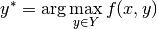
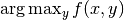
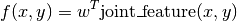
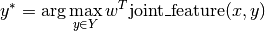
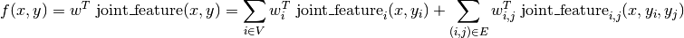
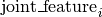
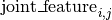

What is structured learning?¶
Structured prediction is a generalization of the standard paradigms of supervised learning, classification and regression. All of these can be thought of finding a function that minimizes some loss over a training set. The differences are in the kind of functions that are used and the losses.
In classification, the target domain are discrete class labels, and the loss is usually the 0-1 loss, i.e. counting the misclassifications. In regression, the target domain is the real numbers, and the loss is usually mean squared error. In structured prediction, both the target domain and the loss are more or less arbitrary. This means the goal is not to predict a label or a number, but a possibly much more complicated object like a sequence or a graph.
In structured prediction, we often deal with finite, but large output spaces Y. This situation could be dealt with using classification with a very large number of classes. The idea behind structured prediction is that we can do better than this, by making use of the structure of the output space.
A (very simplified) example¶
Let’s say we want to generate text from spoken sentences. Viewed as a pure classification problem, we could see each possible sentence as a class. This has several drawbacks: we have many classes, and to do correct predictions, we have to have all possible sentences in the training set. That doesn’t work well. Also, we might not care about getting the sentence completely right.
If we misinterpret a single word, this might be not as bad as misinterpreting every word. So a 0-1 loss on sentences seems inappropriate. We could also try to view every word as a separate class and try to predict each word individually. This seems somehow better, since we could learn to get most of the word in a sentence right. On the other hand, we lose all context. So for example the expression “car door” is way more likely than “car boar”, while predicted individually these could be easily confused. For a similar example, see OCR Letter sequence recognition.
Structured prediction tries to overcome these problems by considering the output (here the sentence) as a whole and using a loss function that is appropriate for this domain.
A formalism¶
I hope I have convinced you that structured prediction is a useful thing. So how are we going to formalize this? Having functions that produce arbitrary objects seem a bit hard to handle. There is one very basic formula at the heart of structured prediction:

Here x is the input, Y is the set of all possible outputs and f is a compatibility function that says how well y fits the input x. The prediction for x is y*, the element of Y that maximizes the compatibility.
This very simple formula allows us to predict arbitrarily complex outputs, as long as we can say how compatible a given output is with the input.
This approach opens up two questions:
How do we specify f? How do we compute y*?
As I said above, the output set Y is usually a finite but very large set (all graphs, all sentences in the English language, all images of a given resolution). Finding the argmax in the above equation by exhaustive search is therefore out of the question. We need to restrict ourselves to f such that we can do the maximization over y efficiently. The most popular tool for building such f is using energy functions or conditional random fields (CRFs).
There are basically three challenges in doing structured learning and prediction:
- Choosing a parametric form of f.
- Solving .
- Learning parameters for f to minimize a loss.
PyStruct takes  to be a linear function of some parameters w and a joint feature function of x and y:
to be a linear function of some parameters w and a joint feature function of x and y:

So that the prediction is given by

Here are parameters that are learned from data, and joint_feature is defined by the user-specified structure of the model. The definition of joint_feature is given by the Models. PyStruct assumes that y is a discrete vector, and most models in PyStruct assume a pairwise decomposition of the energy f over entries of y, that is

Here V are a set of nodes corresponding to the entries of y, and E are a set of edges between the nodes. The particular form of  and  depends on the model used. See the User Guide for details on the models.
The second problem, computation of the argmax, is done via third party inference solvers. The interfaces to these are explained at Inference. The last part, the learning of is actually the core part of PyStruct. There are several different algorithms implemented, which you can find under Learning.
There have been many publications and book on this topics. For a nice introduction (in the context of computer vision), I recommend Sebastian Nowozin, Christoph H. Lampert:
Structured Learning and Prediction in Computer Vision
Two of the founding publications on the topic of learning structured models are:
- Ben Taskar, Carlos Guestrin, Daphne Koller Max-Margin Markov Networks
- Tsochantaridis, T. Joachims, T. Hofmann, and Y. Altun Large Margin Methods for Structured and Interdependent Output Variables